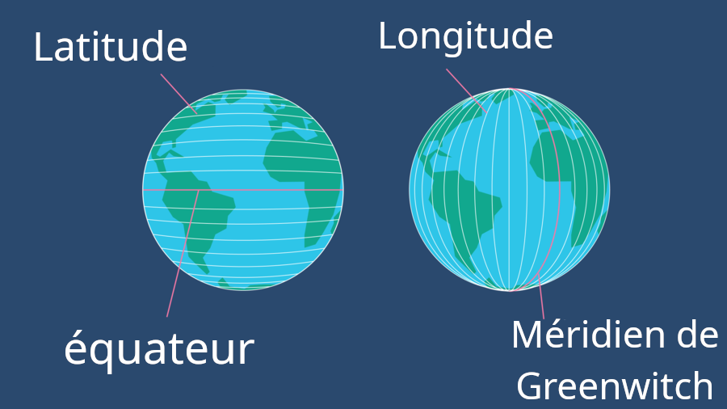

1) Qu'est de que l'heure UTC ?
L'heure UTC (Universal Time Coordinated) est l'heure universelle, elle ne depend donc pas de l'heure dans le pays.
Cette heure est calaculée par plusieurs pays dans le monde notament en france à l'observaoire de Paris.
2) Qu'est ce qu'une trame NMEA et comment elle fonctionne ?
Une trame NMEA est une trame qui permet de transporter des informations sur la position GPS d'un object vers un autre appareil pour le localiser par exemple.
3) Montrer deux images du globe terrestre indiquant le repérage par rapport à la latitude, puis par rapport à la
longitude.

Le méridien de Greenwitch et l'équateur sont les positions à 0° des objects en longitude et lattitude.
Mon code fonctionne en plusieurs fichiers qui ont chaqun une fonction bien précise.
1) Main.pyw
Ce fichier est à la racine du repertoire. Il est le fichier de base à executer. pour generer la carte
Le nom du fichier
Main signifie que ce fichier est le fichier principal souvent celui a executer pour realiser la tache générale. Son extention pyw est la meme extention que py pour les fichiers python sauf qu'elle ne lance pas la console au premier plan et la laisse en arriere plan ce qui peut etre utile pour ne pas effrayer l'utilisateur avec plein de choses a l'écran et ne laisser que l'interface utilse.
Ce fichier est le plus petit car il ne fait que lancer les différents fichiers avec les bonnes informations c'est en quelque sorte le chef du programme.
Il commence avec l'importation des fonctions qui se situent dans le dossier fonctions_py qui trateront les informations et l'affichage de la carte.
import fonctions_py.fonctions as fct
import fonctions_py.carte as carte
import fonctions_py.affichage_console as aff_c
Il y a une fonction longitude qui transforme une donnée de localisation brute en format degrés décimaux.
def brut_decimal(donnee:float) -> float:
""" transforme les données brutes de la trame en données utilisables en decimales"""
return float(donnee[0:2]) + float(donnee[2:])/60